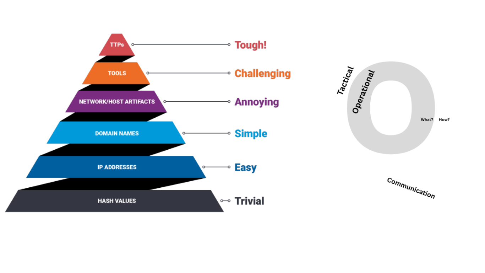
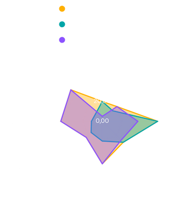

When I worked in a Computer Emergency Response Team (CERT), ransomware cases were part of the routine. A company would be hit, backups failed, and the question of ransom payment would come up. Every so often, the team would offer the option of a sanction checking service to verify whether payment was even legal. However, these sanction checks would depend on indicators like cryptocurrency wallet addresses, file hashes, IP addresses, and domain names. These were all indicators that were known to be volatile, so I wondered: how effective is this really?.
These checks felt necessary but rarely brought clarity. Infrastructure changed constantly. Attribution was fragile and full of assumptions, and the same group might be known under a different name next week. Even when the style of a ransomware operation was recognized, it didn’t guarantee that we could connect it to a known actor. The attacker would disappear after the ransom payment, but the legal and financial risk remained, now shifted onto the victim.
That discomfort stuck with me. So when I had the opportunity to start working on the paper this post is based on, it wasn’t just about the fragility of different Indicators of Compromise (IoCs). It was about something deeper: what happens when policy assumes a level of certainty that defenders simply don’t have? This blogpost is an extension of the USENIX paper: a reflection on how our current enforcement and compliance frameworks place responsibility on those with the least access to reliable information. It is not a call to weaken sanctions policy, but a call to make it more just. If sanctions are meant to constrain attackers, then enforcement must be designed to reach them–not to retroactively penalize the victims.
The limits of technical attribution
In Threat Intelligence, attribution is a layered process. Low-level IoCs, pieces of evidence related to infrastructure, the attack, payment methods, and other operational details, are easy to collect and useful for detection. However, they are extremely volatile. These indicators can be changed with little effort by attackers, making them poor foundations for long-term attributions. This idea has been confirmed by frameworks like Bianco’s Pyramid of Pain and Rid and Buchanan’s Q-Model.
Hence, it seems irresponsible to base sanctions lists on these low-level indicators, which is why the paper behind this post investigates the value of high-level IoCs. By contrast, high-level IoCs capture behavioral traits such as how attackers deploy their malware, how they move laterally, ransom note linguistics, negotiation attitudes, and Tactics, Techniques, and Procedures (TTPs). Both models agree that high-level indicators are more resilient to evasion and thus more trustworthy across rebrandings.

Figures 1 & 2: The Pyramid of Pain and the Q-ModelThe affiliate wild-card
Many ransomware operations follow an affiliate model known as Ransomware-as-a-Service (RaaS), in which core developers lease their tools to independent partners. These affiliates vary widely in skill and methods, and while operators often provide deployment guidelines, affiliates may diverge from them in practice. As a result, high-level indicators, such as lateral movement techniques or tooling preferences, can differ significantly even within the same group, adding noise to attribution efforts.
Observations from the paper
We analysed datasets containing information on ransomware incidents: 27 private incident reports from an incident response company and 13 public CISA advisories based on various other incident response organizations. Two findings stood out from this data:

- Inside a single “brand,” the technical overlap was surprisingly low. Different incidents linked to the same group often shared fewer than half their TTPs.
- Across sources, the overlaps became even lower. What CISA published and what the responders from our partnering company observed for the same group only line up part of the time. This shows a significant discrepancy between the reporting of different organizations, which undermines the assumption that defenders (or regulators) have access to a consistent view of attacker behaviour at the time sanctions checks are performed.
In short, the low-level indicators that sanctions lists currently lean on tend to expire quickly, while no one seems to have a comprehensive overview of the behavioural high-level indicators. While this dataset is of course not exhaustive, the consistency of these patterns across both public and private reporting streams underscores their broader relevance.
Why this matters for sanctions
Yet, most compliance frameworks, and even some insurance policies, continue to rely on indicators that appear to uniquely identify a ransomware group. This is an understandable position: enforcement systems require clear identifiers to function. However, this expectation favors indicators that are easily assigned over indicators that are more stable but less individually distinctive.
As a result, and as confirmed by our interviewees, high-level behavioural indicators are often excluded from compliance checks, not because they are unreliable, but because they lack the singularity needed to support legal or financial action. Sanctions enforcement, therefore, depends on low-level indicators not due to their robustness, but because they are uniquely attributable. This is true even when those same indicators can be changed by attackers with minimal effort.
Until enforcement frameworks find a way to operationalise high-level signals across rebrandings, defenders will have to deal with indicators that are known to change rapidly. In practice, this means working with the most accessible signals, not the most meaningful ones.
Rebranding as a sanctions-evasion strategy
Ransomware groups don’t stay still. After public exposure, internal conflict, or sanctions, many simply dissolve and rebrand under a new name. The infamous Conti group, for instance, splintered into several new entities, including Royal and then BlackSuit, among others. These new groups often adopt new infrastructure, names, leak sites, and negotiation portals, but retain (some of) the same personnel, malware toolchains, and affiliate relationships.
This rebranding breaks the link between old and new entities in legal and public intelligence contexts. While threat researchers may recognize the continuity, governments may typically require formal evidence of control or ownership to link a new group to a sanctioned predecessor. That process is slow, often opaque, and rarely public. Months can pass before rebranded groups are re-sanctioned, during which victims remain legally exposed.
Victims, meanwhile, are expected to know better. If they pay a ransom to a group that is later tied to a sanctioned actor, they may be penalized, even if the link was not publicly known at the time of payment. Various interviewees in the study mentioned this to be a great risk to the victim, as insurers can (and will) try to claw back a paid-out ransom months later if the recipient is sanctioned after the fact, effectively retro-dating the exclusion to the payment date. Moreover, the moment a ransomware group is sanctioned, it may trigger a rebrand, further obfuscating the public overview. This is the heart of the policy asymmetry: ransomware groups can easily obscure their identities whereas defenders and victims are expected to see through the smoke.
The information deficit and the burden of compliance
This means that the position that a victim of ransomware finds themselves in can be framed as an information deficit. The entities responsible for enforcing compliance, such as governments, regulators, and insurers, operate on the assumption that attribution is clear and actionable. However, in ransomware cases, attribution is often incomplete, delayed, or ambiguous.
The ransomware cases we’ve analyzed in our study show that low-level indicators rarely persisted across incidents, let alone rebrandings. In several cases, ransom payments were made to groups not publicly sanctioned at the time, only for links to sanctioned actors to emerge through later intelligence analysis. These links often relied on high-level behavior indicators like linguistics, panel design reuse, or TTPs, which were absent from standard sanction checks.
This creates a critical gap: compliance decisions are expected to be based on indicators that are technically available but operationally unreliable. Meanwhile, indicators that could offer stronger attribution are often not included in threat feeds or sanctions designations, and are not legally recognized as sufficient evidence. Furthermore, because of phenomena like the Ransomware-as-a-Service (RaaS) ecosystem, slight deviations in reporting using frameworks like the MITRE ATT&CK Matrix, and the commercialisation of the Threat Intelligence industry, data is so fragmented that no single organization appears to have a comprehensive view of high-level indicators, making coordinated enforcement even more difficult. This also means that even when TTP combinations appear distinctive on paper, the fragmentation and inconsistency across sources make them impractical for real-world sanctions checks.
In practice, this means that defenders may act in good faith based on the best available data and still find themselves in violation of compliance expectations. While European countries are typically more forgiving than the U.S. by taking into account their Best Efforts regulation, payment to a sanctioned entity still opens up a victim to legal or financial consequences. Several European and American cyber-insurance wordings now not only exclude reimbursement for ransoms that benefit a sanctioned party, but also reserve the right to recover a payout after the fact if new intelligence or a late-issued designation reveals that the attackers were sanctioned. Retroactive enforcement of these exclusions, whether via contract or regulation, shifts the risk back onto those least equipped to verify attribution in real time: the victims.
Structural asymmetry in ransomware enforcement
The outcome is a deeply asymmetrical system. Attackers operate in a fluid, pseudonymous ecosystem. Defenders operate under legal obligations, audit trails, and policy scrutiny. Compliance rules are often applied rigidly. Not only by governments, but increasingly by cyber insurers, even when the available indicators are ambiguous.
Our research calls attention to this structural misalignment. It is not simply a technical issue, but a policy failure. By placing the burden of accurate attribution on defenders, we ignore the reality that attribution is contested and delayed, even among experts.
As I mentioned in the beginning of this article, this post does not argue against the principle of sanctions. It can be a legitimate tool of pressure, deprivation, and deterrence. Rather, it argues that sanctions policy must evolve to strike at the actors it was meant to constrain, not those it was meant to protect. Enforcement that punishes victims through uncertainty does not advance justice; it undermines it.
Policy recommendations: toward risk-aware compliance
Of course, I am not arguing that we should abandon sanctions policy altogether. Instead, it would be better to propose a more realistic and risk-aware approach:
- Recognize the limits of low-level indicators and require corroboration. Enforcement actions should not hinge on volatile indicators alone. Additional behavioral or contextual evidence should be required to support sanctions-related decisions.
- Promote the development and sharing of behavioral-level CTI. Encourage public-private sharing of ransomware tradecraft indicators and support open databases that track rebrand linkages, like the U.S. Cybersecurity and Infrastructure Security Agency’s (CISA) #StopRansomware campaign, where they share observed indicators from various organizations.
- Establish a cross-sector CTI clearing house. All 20 experts we interviewed independently called for a neutral, non-commercial platform to consolidate and curate ransomware attribution data. No single entity today has the necessary scope or trust to do this alone.
- Introduce proportionality and good-faith standards in compliance enforcement. If a victim acted on available information and had no access to classified or high-confidence attribution, they should be protected instead of penalized anywhere.
- Improve transparency of sanctions intelligence. Where governments establish control or continuity between groups, this information should be shared with defenders, not just for enforcement.
These are not radical departures from current policy. They are adjustments grounded in the technical and operational realities of the ransomware ecosystem.
Conclusion: enforcement should follow evidence, not assumption
Sanctions are a legitimate tool of deterrence. But in the ransomware context, their enforcement often assumes more clarity and certainty than defenders and victims actually possess. Attribution is rarely unambiguous. Indicators change, groups rebrand, and intelligence arrives too late to guide real-time decisions. Current enforcement frameworks place responsibility on victims to act with perfect foresight in an environment defined by uncertainty. This doesn’t advance justice—it undermines it.
If policy is to support resilience rather than amplify harm, it must reflect how threat intelligence actually works. That means supporting enforcement with persistent, behavioral signals rather than fragile, low-level ones. It also means ensuring that all parties involved have access to the same information. It means recognizing the asymmetries between attackers who can vanish and reappear at will, and defenders who are left to navigate compliance obligations in the dark.
We can’t sanction what we can’t see. And we shouldn’t punish those who were never the intended target.